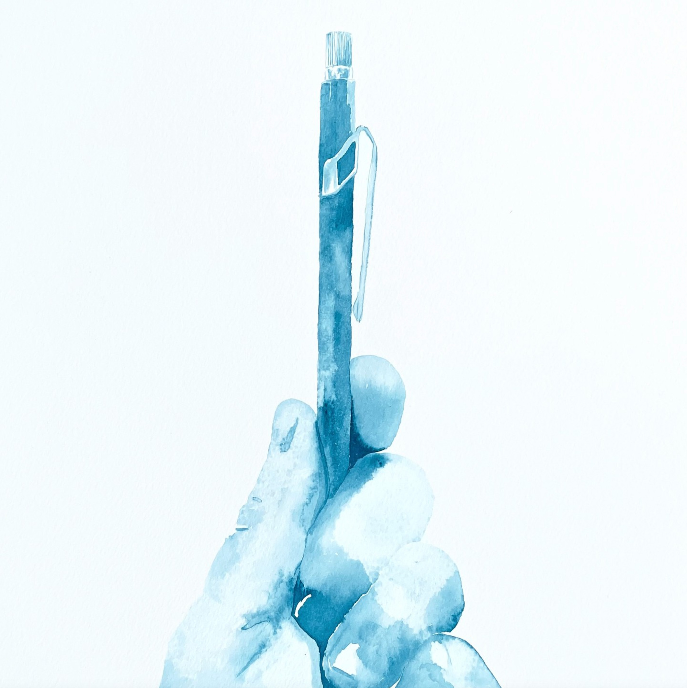

My Digital Second Self
The Curiosity Machine
New UI & UX in AI
10 (additional) Points of Good Design
Gift Guide for Artists, Designers, and Writers.
Analog Chat Interface
What do you want to be true?
You Need Two Decks
Conversational Charisma
How to Finish What You Start
How to Write a First Sentence
How to Give a Toast
How to Learn French in Seven Hours (and other stories about Jazz)
Map of Tokyo Galleries and Museums
Augmented Imagination
Using AI when you can already paint
Ten Lines
How to Design for Near-Instant Wow
How to Battle the Problem-Monster
How to Write a Joke
How to Gain Constructive-Confidence
A brief, literary history of AR
How to say hello
How to Design Emotional Products
Your Zoom Glow up
Malibu Vesuvius
Ode to the Fixpencil
The Structure of Story: Reading List
Design starts with story.
10-Steps to a Friction-Free App.
Seeing with Your Ears: Design and the Post-Visual Era
The 2300-year-old Secret to Better Design
Learn How to Draw
Augmented Life
Words Matter
#DrawTogether
Draw with your daughters: The Inventor’s Worksheet
Roll the Dieter Die
Designers at the Gates of Hell
The Road to Sensorium
Design is Not a Service
If you can draw these three shapes, you can draw the Internet
Turn your Medium post into an 8-page mini-book with one sheet of paper
Human Experience Design
Sensorium: Towards a Total Art
Friends and Strangers
Inside Sequoia’s Creative Lab
Pull the dawn from the night
Unicorns vs. Narwhals
#DesignStory
Hunting for Elegance
The happiness trick
Write better together
The Semiotician’s Oath
How to win a grant
Four iterations
Start with a pencil
Tiny Machines
Is it #Shareworthy?
Iterate, don’t stop
Give your audience something to share
Emphasis
Articulate an idea to instigate change.
Two notebooks, ipad, Prismacolor, Murakami, lead holder, blending stub.
Friends and Strangers
Stone River, Palo Alto